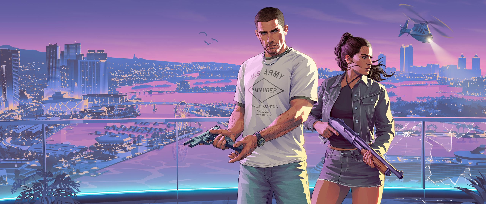
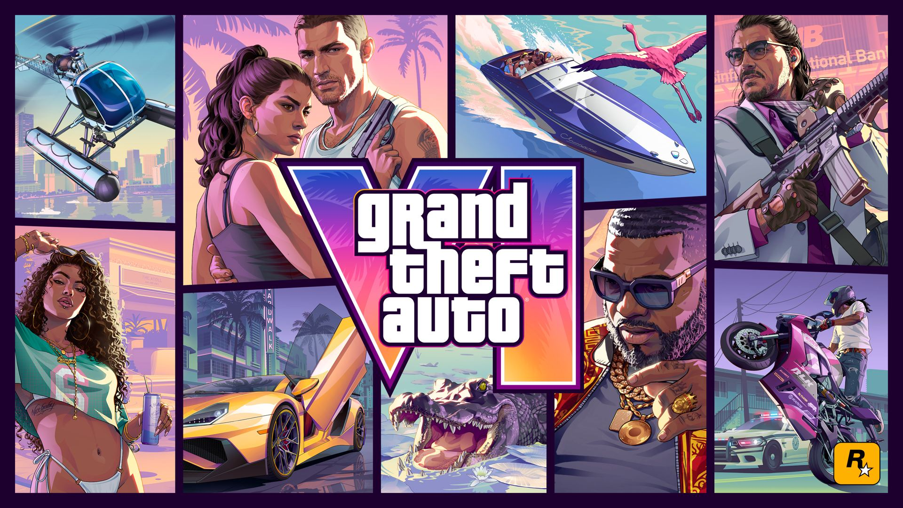

A product breakdown · 11–19 November 2026
Behind the world's most ambitious gaming universe
9 products. 9 product perspectives. One ecosystem that changed the gaming industry.
Why this exists
GTA VI took 13 years. These are the products that kept Rockstar running in that time, broken down one a day, the way a product manager would.
What this is
Nine breakdowns in nine days, 11 to 19 November 2026. A new one unlocks each day until GTA VI launches.
Why Rockstar
People see one game. Around it sit an engine, a player account, a PC launcher, an in-game currency, a subscription and a mod platform. Someone had to decide to build each of them, and decide what each one is for.
How I check it
Every number comes from a fact sheet checked before the page is written. My own opinions are kept apart and labelled as mine.
Every breakdown asks the same seven things
- Product cardType, launch, price, how it earns
- Who it's forThe people who depend on it
- The problem it solvedFor players, and for Rockstar
- How it makes moneyDirectly, or through something else
- The numbersWith a dated timeline
- What I'd changeMy view as a PM
- PM conceptOne idea to learn
The line-up
Select a product
The bigger picture
How the nine connect
None of these products works alone. This map is drawn only from the breakdowns that are already live, so it grows by one product a day.
The four layers are my own grouping, not Rockstar's. Every line comes from a published breakdown, and each one says whether it is a checked fact, my read, or still an open question.
Learn this
One PM concept per product
Each breakdown ends on one idea a product manager should know, and the question it raises. Open a question to see the concept and the short answer.
19 November 2026
Launch day is product 09
The last breakdown is GTA VI itself: launch day, and how the other eight come together.

Who made this
Sameer Mittimani
I'm a working professional learning product management through the IIT Roorkee x Masai Product Management programme. I learn a concept best when I use it on a real business.
So for nine days I'm taking Rockstar apart, one product at a time: who it's for, how it earns, and what I'd change if it were mine to run.
How the facts are checked
- Sources first. Take-Two results and filings, Rockstar announcements and press coverage.
- Two or more must agree. The first research pass is done with AI research tools. Nothing from them goes on a page until at least two sources agree and the big numbers match a web check.
- No guessed numbers. Where Take-Two doesn't publish a figure, the page says so and leaves it out.
- Opinion is labelled. "What I'd change" is my view. Diagrams marked as illustrations are not real data.
This is an independent project. It isn't made, sponsored or approved by Rockstar Games or Take-Two Interactive.